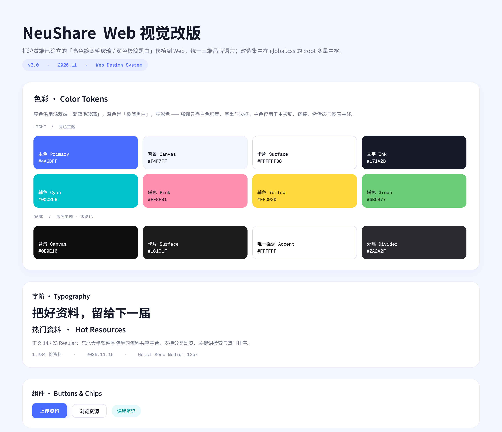
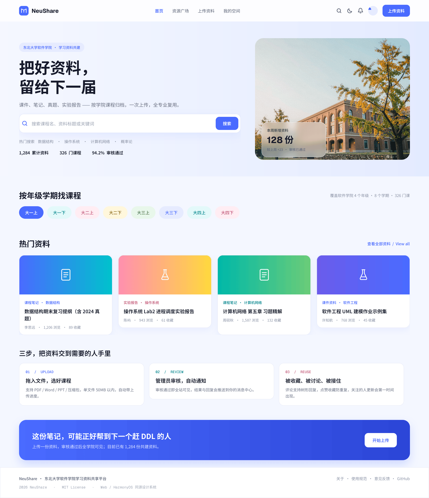
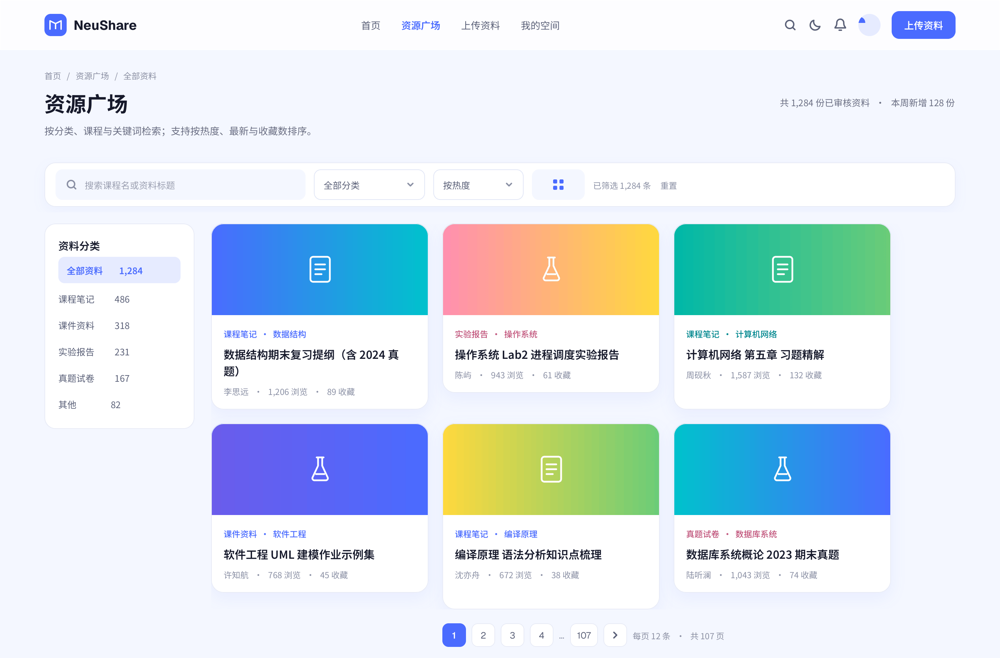
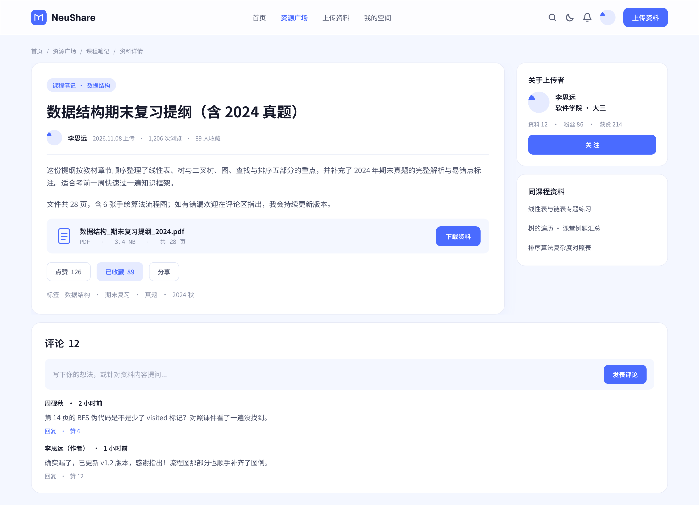
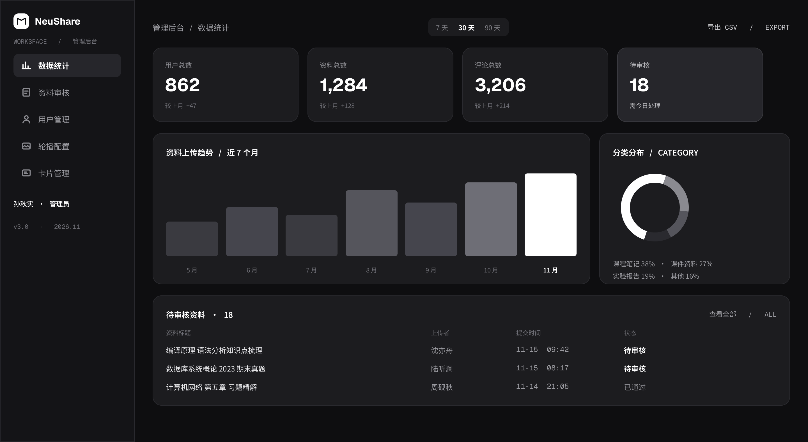

DESIGN DELIVERY / 2026.11.15
NeuShare Web 界面改版 · 设计交付
把鸿蒙端已确立的「亮色靛蓝毛玻璃 / 深色极简黑白」移植到 Web 端，统一三端品牌语言。本页是离线预览，双击即可打开，不依赖网络。
5 个画板
双主题 Light / Dark
1440 桌面稿
Ardot fileId 747589935320212
怎么用
- 可编辑稿在云端：打开 Ardot 设计文件，画布自动保存，图层、文字、变量都能继续改。
- 图片在下面这 5 张：都是 2x 导出的 PNG，可直接放进 README、简历作品集、答辩 PPT 或发给队友看。
- 代码用 theme-v3.css：已放到
src/styles/theme-v3.css（未启用）。在 src/main.js 的 import '@/styles/global.css' 后面加一行 import '@/styles/theme-v3.css' 即全站换色；删掉这行就原样回退。切深色给 <html> 加 data-theme="dark"。
00 设计系统
色板 · 字阶 · 按钮与胶囊 · 亮暗对照

01 首页
玻璃导航 · 非对称 Hero · 学期胶囊 · 热门资料 · 共建 CTA

02 资源广场
筛选工具栏 · 分类侧栏 · 3×2 卡片网格 · 分页

03 资料详情
内容卡 · 文件信息条 · 上传者 · 评论区与作者回复

04 管理后台（深色）
零彩色 · KPI · 柱状图与环形图 · 待审核列表

本目录文件清单
- index.html — 这个离线预览页
- 00 ~ 04 共 5 张 PNG — 2x 导出的画板图
- theme-v3.css — 可直接贴进项目的主题层（覆盖 global.css 变量 + 深色模式 + 新组件类）
- tokens.css — 设计稿原始变量导出（Light / Dark），适合喂给设计工具
- tokens.json — W3C DTCG 格式，带 modes，给未来的 token 管线用